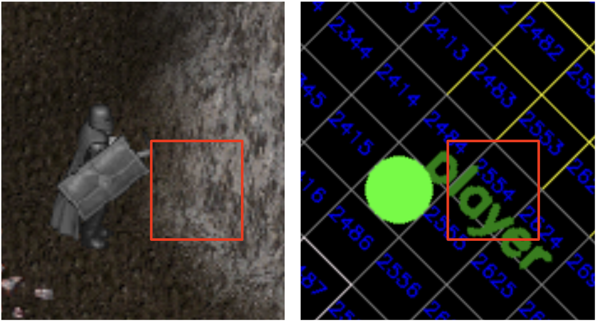
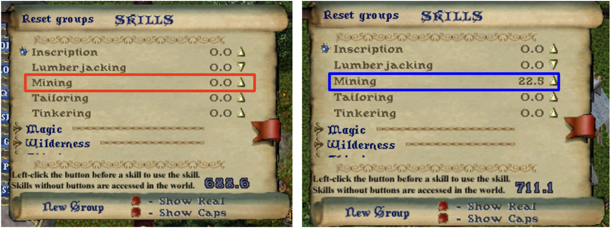

Code Tutorial
Contents
Figure1: Synchronization diagram between python script and the environment.

1. UoService Class
Figure 1 shows the pattern of interaction between Python and Ultima Online client(C#) processes. First, python script samples an action from the model, meanwhile the C# process waits for the action to be passed. In this case ActSemaphore is blocked, while ObsSemaphore has green light.When the step function is called the action tensor is sent into the shared memory and ActSemaphore turns green. It signals to C# to start processing the action of an agent. Meanwhile the ObsSemaphore turns red, blocking python process while waiting for C# to send the observation.
Code 1: UoService Class
class UoService:
'''UoService class including gRPC client'''
def __init__(self, grpc_port, window_width, window_height):
self.grpc_port = grpc_port
self.window_width = window_width
self.window_height = window_height
self.stub = None
self.uo_installed_path = "/home/kimbring2/.wine/drive_c/Program Files (x86)/Electronic Arts/Ultima Online Classic"
self.uoservice_game_file_parser = UoServiceGameFileParser(self.uo_installed_path)
def _open_grpc(self):
# Open the gRPC channel using the port that is same of game client
channel = grpc.insecure_channel('localhost:' + str(self.grpc_port))
self.stub = UoService_pb2_grpc.UoServiceStub(channel)
def parse_land_static(self):
while True:
if self.max_tile_x != None:
cell_x_list = []
cell_y_list = []
tile_data_list = []
for x in range(self.min_tile_x, self.max_tile_x):
cell_x = x >> 3
if cell_x not in cell_x_list:
cell_x_list.append(cell_x)
for y in range(self.min_tile_y, self.max_tile_y):
cell_y = y >> 3
if cell_y not in cell_y_list:
cell_y_list.append(cell_y)
cell_zip = zip(cell_x_list, cell_y_list)
for cell_x in cell_x_list:
for cell_y in cell_y_list:
tile_data = self.uoservice_game_file_parser.get_tile_data(cell_x, cell_y)
for tile in tile_data:
if tile["name"] == "forest":
tile_data_list.append(tile_data)
def step(self, action):
# Send the action data to game client and receive the state of that action
action_type = action['action_type']
source_serial = action['source_serial']
target_serial = action['target_serial']
walk_direction = action['walk_direction']
index = action['index']
amount = action['amount']
run = action['run']
self.stub.WriteAct(UoService_pb2.GrpcAction(actionType=action_type,
sourceSerial=source_serial,
targetSerial=target_serial,
walkDirection=walk_direction,
index=index,
amount=amount,
run=run))
self.stub.ActSemaphoreControl(UoService_pb2.SemaphoreAction(mode='post'))
self.stub.ObsSemaphoreControl(UoService_pb2.SemaphoreAction(mode='wait'))
response = self.stub.ReadObs(UoService_pb2.Config(name='step'))
Figure2: State Transmission Paths.
2. Land and Static Data
In the case of Land and Static objects, there are far more numbers on one screen than Mobile and Item objects. If all objects are received through one loop, there will be significant delay. Fortunately, Land and Static are read from a binary file unlike Mobile and Item data acquired through gRPC. Therefore we can use the two threads to perform both tasks simultaneously as can be seen in Figure 2. In the case of Land and Static objects, there will not be a serious problem even if the incoming order are slightly changed with the Mobile and Item object information because the information will never change unless the agent moves.Code 2: Land and Static Data
import threading
from uoservice.protos import UoService_pb2
from uoservice.protos import UoService_pb2_grpc
from uoservice.UoService import UoService
from uoservice.UoServiceGameFileParser import UoServiceGameFileParser
def parse_land_static(uo_service):
while True:
if uo_service.max_tile_x != None:
cell_x_list = []
cell_y_list = []
for x in range(uo_service.min_tile_x, uo_service.max_tile_x):
cell_x = x >> 3
if cell_x not in cell_x_list:
cell_x_list.append(cell_x)
for y in range(uo_service.min_tile_y, uo_service.max_tile_y):
cell_y = y >> 3
if cell_y not in cell_y_list:
cell_y_list.append(cell_y)
cell_zip = zip(cell_x_list, cell_y_list)
for cell_x in cell_x_list:
for cell_y in cell_y_list:
tile_data = uo_service.uoservice_game_file_parser.get_tile_data(cell_x, cell_y)
for tile in tile_data:
if tile["name"] == "forest":
print("name: {0}, game_x: {1}, game_y: {2}".format(tile["name"], tile["game_x"], tile["game_y"]))
def step(uo_service):
action_flag = True
while True:
## Declare the empty action
action = {}
action['action_type'] = 0
action['source_serial'] = 0
action['target_serial'] = 0
action['walk_direction'] = 0
action['index'] = 0
action['amount'] = 0
action['run'] = False
backpack_item_data = uo_service.backpack_item_dict
equipped_item_data = uo_service.equipped_item_dict
player_status_dict = uo_service.player_status_dict
if step % 150 == 0:
## Excecute the speciec action
if action_flag == True:
action['action_type'] = 0
action['target_serial'] = gold_serial
action['amount'] = 100
action_flag = False
obs = uo_service.step(action)
## Declare the main function
def main():
## Declare the UoService using the parsed argument
uo_service = UoService(grpc_port, window_width, window_height)
## Open the gRPC client to connect with gRPC server of CSharp part
uo_service._open_grpc()
## Send the reset signal to gRPC server
obs = uo_service.reset()
thread_2 = threading.Thread(target=step, daemon=True, args=(uo_service,))
thread_1 = threading.Thread(target=parse_land_static, daemon=True, args=(uo_service,))
thread_2.start()
thread_1.start()
thread_2.join()
thread_1.join()
3. First Walk
The most basic action in an MMORPG game would be walking close to a specific monster. Let's see how to use the states and actions of the UoService to do that through Python code.The pre-work before interacting with game client is to declare the UoService class seen above, connect gRPC communication, and call the reset() function. First infomation we need to know might be position of player. That can be obtained from the player_game_x, player_game_y of the uo_service. Next, we need to know information of monsters around the player, which is included in world_mobile_dict. There can be various types and multiple numbers of mobiles in the same space as the player. Here, only one mobile named Skeleton near the player is selected using the name and distance value of mobile state. How can we make up the arguments actionType, sourceSerial, targetSerial, walkDirection, index, amount, run of action for walk. First, we just know that the actionType should be 1. Next, the value for the walkDirection can be calculated from the x and y position of player and monster by using the simple planning algorithm. If you need to approach quickly to monster, set the run arguemnt of action as True.
Code 3: Rule-based walking example code
uo_service = UoService(grpc_port, window_width, window_height)
uo_service._open_grpc()
obs = uo_service.reset()
target_serial = None
for step in range(100000):
player_game_x = uo_service.player_game_x
player_game_y = uo_service.player_game_y
if len(uo_service.world_mobile_dict) != 0 and target_serial == None:
serial_list = [k for k, v in uo_service.world_mobile_dict.items() \
v['name'] == ' A Skeleton ' and v['distance'] <= 10 \
and v['distance'] > 1]
target_serial = random.choice(serial_list)
action = {}
action['action_type'] = 0
action['source_serial'] = 0
action['target_serial'] = 0
action['walk_direction'] = 0
action['index'] = 0
action['amount'] = 0
action['run'] = False
if step % 50 == 0:
if target_serial != None and player_game_x != None:
if target_serial in uo_service.world_mobile_dict:
target_skeleton = uo_service.world_mobile_dict[target_serial]
target_game_x = target_skeleton["gameX"]
target_game_y = target_skeleton["gameY"]
direction = utils.get_walk_direction_to_target([player_game_x, player_game_y],
[target_game_x, target_game_y])
if direction != -1:
action['action_type'] = 1
action['walk_direction'] = direction
action['run'] = True
uo_service.step(action)
4. First Attack
After getting close to a monster, the most basic interaction possible would be an attack. Let's use the more state and action of the UoService to do that.Melee attacks are possible only when the distance from the monster is almost zero. Therefore, this distance should be checked before attacking. This information is contained in the mobile's distance part, and you can acquire a value through the target_mobile['distance'] code.
Next, the player must be in the war mode to attack enemie in Ultima Online. You must check the current status of mode by using the war_mode value of UoService class like a uo_service.war_mode If it is false, set the action_type and index argument of action to 7 and 1 respectively to set the player as war mode.
Finally, if the player approach close to the monster and war mode is true, you can set the action_type as 2. Additionally, the target_serial argument is needed to be set as the serial of target mobile.
Code 4: Rule-based attacking example code.
uo_service = UoService(grpc_port, window_width, window_height)
uo_service._open_grpc()
obs = uo_service.reset()
target_serial = None
for step in range(100000):
player_game_x = uo_service.player_game_x
player_game_y = uo_service.player_game_y
if len(uo_service.world_mobile_dict) != 0 and target_serial == None:
mobile_serial_list = [k for k, v in uo_service.world_mobile_dict.items() \
v['name'] == ' A Skeleton ' and v['distance'] <= 10 \
and v['distance'] > 1]
target_serial = random.choice(mobile_serial_list)
action = {}
action['action_type'] = 0
action['source_serial'] = 0
action['target_serial'] = 0
action['walk_direction'] = 0
action['index'] = 0
action['amount'] = 0
action['run'] = False
if step % 50 == 0:
if target_serial != None and player_game_x != None:
if target_serial in uo_service.world_mobile_dict:
target_mobile = uo_service.world_mobile_dict[target_serial]
target_game_x = target_mobile["gameX"]
target_game_y = target_mobile["gameY"]
direction = utils.get_walk_direction_to_target([player_game_x, player_game_y],
[target_game_x, target_game_y])
distance = target_mobile['distance']
war_mode = uo_service.war_mode
if distance >= 2:
if direction == -1:
action['action_type'] = 0
else:
## Walk toward target mobile
action['action_type'] = 1
action['walk_direction'] = direction
action['run'] = True
else:
if war_mode == False:
action['action_type'] = 7
action['index'] = 1
else:
action['action_type'] = 2
action['target_serial'] = target_serial
obs = uo_service.step(action)
5. First Looting
After attacking and killing a monster, player can acquire various items including gold from the corpse. To do this with python code, first you need to check world_item_dict of the uo_service instead of the world_mobile_dict because the monster that was mobile type is transformed to an item when it dies. For the reason that the corresponding Dict has information on all items of the world, you should filter it using the isCorpse value.Having secured the serial number of the corpse that exists around the player, the next step is to open it. The corresponding action can be composed by setting the action_type as 2 and target_serial as the serial number of the corpse item.
From the moment the corpse is opened, world_item_dict start to include the items of that corpse. To determine which item is inside the corpse, the container part of item information can be used item["container"]. If you want to select only gold among the identified items inside the corpse, you can use the name information of item like a if "gold" in item["name"].
Having obtained a serial of the gold item of opened corpse, that item should be picked up before putting it in the player backpack. This can be done by setting the action_type as 3, target_serial to the serial of the gold item, and amount to the total number of gold.
When picking up an item, hold_item_serial of uo_service is changed to the serial number of the item. Finally, player can drop the currently held item onto the backpack by setting action_type to 4 causes the.
In order to check whether the player looted gold well, you can check the gold part of player_status_dict of the uo_service like player_status_dict['gold'].
Code 5: Rule-based looting example code.
target_mobile_serial = None
corpse_dict = {}
corpse_serial = None
hold_item_serial = 0
corpse_item_dict = {}
for step in range(100000):
player_game_x = uo_service.player_game_x
player_game_y = uo_service.player_game_y
if len(uo_service.world_mobile_dict) != 0 and target_mobile_serial == None:
skeleton_serial_list = [k for k, v in uo_service.world_mobile_dict.items() \
if v['name'] == ' A Skeleton ' and v['distance'] <= 10 and v['distance'] > 1]
target_mobile_serial = random.choice(skeleton_serial_list)
corpse_dict = {}
for k, v in uo_service.world_item_dict.items():
if v["isCorpse"] == True:
corpse_dict[k] = v
action = {}
action['action_type'] = 0
action['source_serial'] = 0
action['target_serial'] = 0
action['walk_direction'] = 0
action['index'] = 0
action['amount'] = 0
action['run'] = False
if step % 150 == 0:
if len(uo_service.player_status_dict) != 0:
player_gold = uo_service.player_status_dict['gold']
if target_mobile_serial != None and player_game_x != None:
if target_mobile_serial in uo_service.world_mobile_dict:
target_mobile = uo_service.world_mobile_dict[target_skeleton_serial]
else:
target_mobile_serial = None
continue
target_mobile_game_x = target_mobile["gameX"]
target_mobile_game_y = target_mobile["gameY"]
direction = utils.get_walk_direction_to_target([player_game_x, player_game_y],
[target_mobile_game_x, target_mobile_game_y])
distance = target_mobile['distance']
war_mode = uo_service.war_mode
hold_item_serial = uo_service.hold_item_serial
for k_corpse, v_corpse in corpse_dict.items():
for k_world, v_world in uo_service.world_item_dict.items():
if k_corpse == v_world["container"]:
if k_world not in corpse_item_dict:
corpse_item_dict[k_world] = uo_service.world_item_dict[k_world]
else:
corpse_item_dict[k_world] = uo_service.world_item_dict[k_world]
if len(corpse_dict) == 0:
if distance >= 2:
if direction == -1:
action['action_type'] = 0
else:
action['action_type'] = 1
action['walk_direction'] = direction
action['run'] = True
else:
if war_mode == False:
action['action_type'] = 7
action['index'] = 1
else:
action['action_type'] = 2
action['target_serial'] = target_mobile_serial
else:
if len(corpse_item_dict) == 0:
corpse_serial_list = list(corpse_dict.keys())
corpse_serial_data = random.choice(corpse_serial_list)
if corpse_serial == None:
corpse_serial = corpse_serial_data
action['action_type'] = 2
action['target_serial'] = corpse_serial
else:
if hold_item_serial == 0:
gold_item_serial, gold_item_max = \
utils.get_serial_amount_from_corpse_item_list(corpse_item_dict, 'Gold')
action['action_type'] = 3
action['target_serial'] = gold_item_serial
action['amount'] = gold_item_max
else:
action['action_type'] = 4
action['target_serial'] = backpack_serial
obs = uo_service.step(action)
6. First Mining
In Ultima Online, player is able to obtain various ingredients to craft the items through the gathering from nature. For example, iron ores must be gathered from nearby mines in order to craft items such as sword. To collect ore, you must equip a PickAxe in one hand that can be checked using the equipped_item_dict["OneHanded"] information of UoService. If you are holding a PickAxe in one hand instead of something else, you need to unequip it first. This can be done by setting the action's action_type to 3 and target_serial to the serial of the currently held item. Next, set the action_type of the action to 4 and the target_serial to the backpack's serial, and put the held item into the backpack. Next, pick up the PickAxe of the backpack in the same way, and set the action_type to 6 to equip it. After that, if you double-click the PickAxe item, you can use the unique ability of the item for the position target. In this case, it is mining skill because item is PickAxe. The uo_service.targeting_state value is changed from -1 to 1 when the training status is set as ground target. When a human plays the game, the target land can be selected by mouse-clicking. How to deliver that kind of action in UoService that has an x and y. As you can see from land indexing tutorial, the land can be divided and processed as follows although it looks like a continuous data in game screen.Figure3: Diagram of Land target indexing.
 After land targeting is activated by double-clicking PickAxe, you can use the mining ability for the land by settingt the action_type to 5, index to the unique index of that land.Code 6: Rule-based mining example code.
def step(uo_service):
pickaxe_serial = None
equip_item_flag = False
unequip_item_serial = None
pickaxe_item_serial = None
onehanded_item_serial = None
drop_item_serial = None
picked_up_item_serial = None
mining_prepare_flag = False
mining_ready_flag = False
targeting_type = None
one_time_trial = True
while True:
backpack_item_data = uo_service.backpack_item_dict
equipped_item_dict = uo_service.equipped_item_dict
hold_item_serial = uo_service.hold_item_serial
targeting_state = uo_service.targeting_state
unequip_item_serial = None
pickaxe_item_serial = None
if "OneHanded" in equipped_item_dict:
if equipped_item_dict["OneHanded"]["name"] != "Pickaxe":
unequip_item_serial = equipped_item_dict["OneHanded"]["serial"]
elif equipped_item_dict["OneHanded"]["name"] == "Pickaxe":
onehanded_item_serial = equipped_item_dict["OneHanded"]["serial"]
if mining_ready_flag == False:
mining_prepare_flag = True
else:
for k_backpack, v_backpack in backpack_item_data.items():
if v_backpack["name"] == "Pickaxe":
pickaxe_item_serial = k_backpack
player_status_dict = uo_service.player_status_dict
pickaxe_serial, index = utils.get_serial_by_name(backpack_item_data, 'Gold')
if pickaxe_serial in backpack_item_data:
pickaxe_serial = backpack_item_data[pickaxe_serial]
else:
print("pickaxe_serial is not in backpack_item_data")
if step % 100 == 0:
if unequip_item_serial != None:
print("Pick up the equipped item from player")
action['action_type'] = 3
action['target_serial'] = unequip_item_serial
unequip_item = uo_service.world_item_dict[unequip_item_serial]
uo_service.picked_up_item = unequip_item
drop_item_serial = unequip_item_serial
unequip_item_serial = None
elif drop_item_serial != None and uo_service.backpack_serial:
print("Drop the holded item into backpack")
action['action_type'] = 4
action['target_serial'] = uo_service.backpack_serial
drop_item_serial = None
elif pickaxe_item_serial != None:
print("Pick up the Pickaxe item from backpack")
action['action_type'] = 3
action['target_serial'] = pickaxe_item_serial
equip_item_flag = True
elif equip_item_flag == True:
print("Equip the holded item")
action['action_type'] = 6
equip_item_flag = False
elif mining_prepare_flag == True and one_time_trial == True:
print("Double click the Pickaxe item")
action['action_type'] = 2
action['target_serial'] = onehanded_item_serial
mining_prepare_flag = False
mining_ready_flag = True
one_time_trial = False
elif mining_ready_flag == True and targeting_state == 1:
print("Mining the land target")
action['action_type'] = 5
action['index'] = 2554
mining_ready_flag = False
obs = uo_service.step(action)
7. First Training Ability
In the case of skills in Ultima Online, the success rate of skills and the types of items that can be obtained vary depending on the level. The success rate of the mining skill discussed earlier is much higher if you give gold to the NPC at the beginning and raise the level a little.Figure4: Mining Skill Level.
 At this section, let's learn how to raise the skill level with Python code using UoService. The first thing to do is to check the mining skill level of the current agent, which can be checked using the player_skills_dict. Because the corresponding Dict has information of all skills of agent, information for the Mining skill can be obtained through the 'Mining' key. The next thing to do is to find an NPC who can teach Mining skills among Mobiles around the agent. This information can be found by looking at whether the title string of world_mobile_dict has a miner. If such an NPC exists, it is necessary to know the list of interaction that is available with the corresponding NPC. This can be done by setting action_type to 10 and target_serial to the serial number of the Miner that was previous step. In the case of the Pop Up menu, it is saved in the form of a Python list in the popup_menu_list of UoService as soon as it is shown on the screen. If you set this value as index and action_type as 11 and send the action to the client, you can select the corresponding pop up menu.Figure5: Open Pop Up Menu.
If you select the Training Mining pop-up menu, the NPC will tell you the gold needed to learn the skill through the chat at the top of it. This data is stored in cliloc_dict of UoService, and the key value is the serial number of the NPC that said the text, so the value can be obtained by using the serial number of the NPC used when opening the pop-up menu as a key. Among the obtained values, affix represents the required gold value. To pay gold, you must first pick up as much gold as the value of gold from the agent's backpack. First, find out the serial number of gold, set it as target_serial, action_type as 3, set amount as the value of gold for skill learning acquired in the previous step, and send an action.Figure6: Paying the training fee to NPC.
If you do that, you can pick up that amount of gold, and then you have to deliver this gold to the corresponding NPC. This can be done by setting action_type to 4 and target_serial to the serial number of the NPC you want to pass.Code 7: Rule-based training ability example code.
open_pop_up_flag = True
select_pop_up_flag = False
training_price = None
pick_up_gold_flag = False
giving_gold_flag = False
one_trial_check_flag = True
while True:
miner_teacher_serial = None
miner_teacher = None
if len(uo_service.world_mobile_dict) != 0:
for k_world, v_world in uo_service.world_mobile_dict.items():
if "Orane" in v_world["name"] and "miner" in v_world["title"]:
miner_teacher_serial = k_world
miner_teacher = uo_service.world_mobile_dict[miner_teacher_serial]
## Player status
hold_item_serial = uo_service.hold_item_serial
cliloc_dict = uo_service.cliloc_dict
backpack_serial = uo_service.backpack_serial
cliloc_dict = uo_service.cliloc_dict
popup_menu_list = uo_service.popup_menu_list
player_skills_dict = uo_service.player_skills_dict
if "Mining" in player_skills_dict:
mining_skill_level = player_skills_dict["Mining"]["value"]
backpack_item_data = uo_service.backpack_item_dict
gold_serial, index = utils.get_serial_by_name(backpack_item_data, 'Gold')
## Declare the empty action
action = {}
action['action_type'] = 0
action['source_serial'] = 0
action['target_serial'] = 0
action['walk_direction'] = 0
action['index'] = 0
action['amount'] = 0
action['run'] = False
if step % 100 == 0:
if miner_teacher_serial != None:
if miner_teacher_serial in cliloc_dict:
for cliloc_data in cliloc_dict[miner_teacher_serial]:
if cliloc_data["affix"] != '':
training_price = int(cliloc_data["affix"])
if one_trial_check_flag == True:
pick_up_gold_flag = True
one_trial_check_flag = False
if open_pop_up_flag == True and miner_teacher_serial != None and mining_skill_level < 20:
print("open the pop up menu of NPC")
action['action_type'] = 10
action['target_serial'] = miner_teacher_serial
open_pop_up_flag = False
select_pop_up_flag = True
elif select_pop_up_flag == True and len(popup_menu_list) != 0:
print("select the pop up menu")
action['action_type'] = 11
action['target_serial'] = miner_teacher_serial
menu_index = 0
for i in range(0, len(popup_menu_list)):
if popup_menu_list[i].text == "Train Mining" and popup_menu_list[i].active == True:
action['index'] = i
uo_service.popup_menu_list = []
select_pop_up_flag = False
elif training_price != None and pick_up_gold_flag == True and backpack_serial != None and gold_serial != None:
print("pick up gold to before giving it to NPC")
action['action_type'] = 3
action['target_serial'] = gold_serial
action['amount'] = training_price
pick_up_gold_flag = False
giving_gold_flag = True
elif giving_gold_flag == True:
print("giving the gold to NPC")
action['action_type'] = 4
action['target_serial'] = miner_teacher_serial
giving_gold_flag = False
obs = uo_service.step(action)
8. First Smelting
To make a sword using collected Ore, the item must be melted and converted into an ingot. This process is called Smelting and can be done by double-clicking the collected Ore item and clicking the Forge as the target. Since Forge is in the Mining camp and is classified as an Item, if the item is around the agent, you can check the unique information of it from world_item_dict of uo_service.Figure8: Forge Item Location.
The agent can use the Smelting skill when the distance between Forge is 2 or less. Therefore, you you must first check the distance using get_distance function of uo_service. Once near the Forge, you now need to double-click the Ore item in the BackPack to prepare for Smelting. If you want to use only part of the Ore, set the action_type to 3, the target_serial to the serial of the Ore and the amount as value you want to pick up. Next, you need to drop it back to the Backpack. At this time, you can use the previously used action_type 4, but you need to set the index to 1 here to prevent the dropped item will be merged into the existing item chunk what it come from.Figure9: Item Divide Drop.
After dividing ores, there are two Ore items in the Backpack. For some reason, you should use the amount information of world_item_dict to check the serial number of the smaller ore item. Now, you need to double-click the Ore Item you want to Smelting. Just as you used a PickAxe when collecting Ore, set the action_type to 2 and set the target_serial to the serial of the Ore. When Ore is double-clicked, the targeting_state of UoService changes like PickAxe. This time, the value changes to 0 to indicate that the item is the target, not a 1 for a land target. Finally, you need to set action_type to 5 as in the case of collecting Ore. In this case, the target_serial should be set to Forge's serial number instead of index. If the ingot was created successfully, you can check the that using the cliloc_dict.Figure10: Crafting Success Check.
Code 8: Rule-based smelting example code.
def get_distance(self, target_game_x, target_game_y):
if self.player_game_x != None:
return max(abs(self.player_game_x - target_game_x), abs(self.player_game_y - target_game_y))
else:
return -1
def step(uo_service):
pick_up_ore_flag = True
drop_ore_flag = False
forging_flag = False
ore_bulk_serial = None
ore_serial = None
double_click_ore_flag = False
forge_serial = None
while True:
if len(uo_service.world_item_dict) != 0:
for k_world, v_world in uo_service.world_item_dict.items():
if "Forge" in v_world["name"]:
forge_distance = uo_service.get_distance(v_world['gameX'], v_world['gameY'])
if forge_distance <= 2:
forge_serial = k_world
backpack_item_data = uo_service.backpack_item_dict
if len(backpack_item_data) != 0:
for k_backpack, v_backpack in backpack_item_data.items():
if "Ore" in v_backpack["name"] and "Gold" not in v_backpack["data"]:
if v_backpack["amount"] >= 30:
if ore_bulk_serial == None:
ore_bulk_serial = k_backpack
pick_up_ore_flag = True
else:
ore_serial = k_backpack
hold_item_serial = uo_service.hold_item_serial
targeting_state = uo_service.targeting_state
cliloc_dict = uo_service.cliloc_dict
hold_item_serial = uo_service.hold_item_serial
backpack_serial = uo_service.backpack_serial
bank_serial = uo_service.bank_serial
## Declare the empty action
action = {}
action['action_type'] = 0
if step % 100 == 0:
if pick_up_ore_flag == True and ore_bulk_serial != None:
action['action_type'] = 3
action['target_serial'] = ore_bulk_serial
action['amount'] = 4
picked_item = uo_service.world_item_dict[ore_bulk_serial]
uo_service.picked_up_item = picked_item
drop_ore_flag = True
pick_up_ore_flag = False
elif drop_ore_flag == True:
action['action_type'] = 4
action['target_serial'] = backpack_serial
action['index'] = 1
drop_ore_flag = False
double_click_ore_flag = True
elif double_click_ore_flag == True and ore_serial != None:
action['action_type'] = 2
action['target_serial'] = ore_serial
forging_flag = True
double_click_ore_flag = False
elif forging_flag == True and forge_serial != None and targeting_state == 0:
action['action_type'] = 5
action['target_serial'] = forge_serial
forging_flag = False
obs = uo_service.step(action)
8. First Trading
In Ultima Online, you can purchase various weapons, armor, or recovery items that are helpful during battle from village NPCs. This time, let's use UoService to buy a Bandage Item that can be used to recover HP from the Healer NPC in town. The first thing to do is to search for the Healer mobile you want to trade in world_mobile_dict. To do this, enter the string Healer in the title of the mobile data and check if the name matches the name of the NPC you want to trade with multiple mobiles. If the serial number of the NPC you want is obtained , set it as target_serial and set the action_type to 10 to check the menu where you can see various interactions possible with the NPC. If action is executed normally, information for displayed menus is received through popup_menu_list data of uo_service. Among them, you need to find the index of the menu where text is buy and active is True. Put the index of the menu you want to select into the index part of the new action, set action_type to 11, and set target_serial to the serial of the healer NPC you used earlier.Figure11: Bandage Trading with Healer.
Then, items that can now be purchased are start to be included in vendor_item_dict of uo_service. First of all, let's check if vendor_serial is currently in the world_mobile_dict in order to check if the NPC to be trading is around the agent. Next, check if the text "Clean Bandage" is included in item_name part of vendor_item, and if so, obtain the serial number of the item from item_serial. Finally, enter target_serial as the serial number of the NPC, action_type as 12, and amount as the amount of the item you want to purchase.Figure12: Bandage Number Change.
If the purchase is successful, the number increase of bandage items in the Backpack can be checked through the backpack_item_dict information of uo_service.Code 8: Rule-based trading item example code.
def step(uo_service):
open_pop_up_flag = True
select_pop_up_flag = False
trade_item_flag = False
while True:
action = {}
healer_vendor_serial = None
healer_vendor = None
world_item_data = uo_service.world_item_dict
world_mobile_data = uo_service.world_mobile_dict
backpack_item_data = uo_service.backpack_item_dict
popup_menu_list = uo_service.popup_menu_list
vendor_item_dict = uo_service.vendor_item_dict
if len(world_mobile_data) != 0:
for k_world, v_world in world_mobile_data.items():
if "Lowell" in v_world["name"] and "healer" in v_world["title"]:
healer_vendor_serial = k_world
healer_vendor = world_mobile_data[healer_vendor_serial]
if step % 100 == 0:
if len(backpack_item_data) != 0:
for k_backpack, v_backpack in backpack_item_data.items():
print("backpack {0}: {1}".format(k_backpack, v_backpack["name"]))
if open_pop_up_flag == True and healer_vendor_serial != None:
print("open the pop up menu of NPC")
action['action_type'] = 10
action['target_serial'] = healer_vendor_serial
open_pop_up_flag = False
select_pop_up_flag = True
elif select_pop_up_flag == True and len(popup_menu_list) != 0:
print("select the pop up menu")
action['action_type'] = 11
action['target_serial'] = healer_vendor_serial
buy_menu_index = 0
sell_menu_index = 0
for i in range(0, len(popup_menu_list)):
if popup_menu_list[i].text == "Buy" and popup_menu_list[i].active == True:
buy_menu_index = i
elif popup_menu_list[i].text == "Sell" and popup_menu_list[i].active == True:
sell_menu_index = i
action['index'] = buy_menu_index
uo_service.popup_menu_list = []
select_pop_up_flag = False
trade_item_flag = True
elif trade_item_flag == True and len(vendor_item_dict) != 0:
source_serial = None
target_serial = None
if len(vendor_item_dict) != 0:
for k_vendor, v_vendor in vendor_item_dict.items():
if v_vendor['vendor_serial'] in world_mobile_data:
if "clean bandage" in v_vendor['item_name'].lower():
source_serial = v_vendor['item_serial']
target_serial = v_vendor['vendor_serial']
action['action_type'] = 12
action['source_serial'] = source_serial
action['target_serial'] = target_serial
action['amount'] = 1
trade_item_flag = False
obs = uo_service.step(action)
8. First Healing
Now that you have purchased an item from an NPC, let's try it. In the case of a Bandage item, it can be used only when it is in the backpack. Therefore, first check whether you have the item from the backpack_item_dict of uo_service information.Figure13: Bandage item in backpack.
 The next status to check is whether current HP of agent is less than its maximum hp. Bandage can only be used when there is more than a certain amount of damage because its purpose is to recover HP. This information can be checked in player_status_dict['hits'] and player_status_dict['hitsMax'] of uo_service.
In the case of Bandage, overlapping use is possible, but the HP recovery is not doubled. Therefore, it is better to check whether the effect of the previous Bandage remains on the agent before using new one.
The information on the buff the Agent currently has is in player_buff_dict, and you can check the existence of the healing buff by checking the text part of that.
The next status to check is whether current HP of agent is less than its maximum hp. Bandage can only be used when there is more than a certain amount of damage because its purpose is to recover HP. This information can be checked in player_status_dict['hits'] and player_status_dict['hitsMax'] of uo_service.
In the case of Bandage, overlapping use is possible, but the HP recovery is not doubled. Therefore, it is better to check whether the effect of the previous Bandage remains on the agent before using new one.
The information on the buff the Agent currently has is in player_buff_dict, and you can check the existence of the healing buff by checking the text part of that.
Figure13: Buff icon of Heal buff.
If all conditions described above are satisfied, set action_type to 14, source_serial to bandage item serial, and target_serial to agent's own serial that can be checked with uo_service.player_serial, and execute the action. When Bandage item is used, the result after use is displayed in cliloc_dict of uo_service. Therefore, by checking this, you can know whether the item was used well and HP is recovered or not.Figure14: Cliloc message of Heal buff.
Code 8: Rule-based healing example code.
def step(uo_service):
player_serial = None
bandage_serial = None
use_bandage_flag = False
healing_active = False
step = 0
while True:
player_serial = uo_service.player_serial
player_status_data = uo_service.player_status_dict
if len(player_status_data) != 0:
player_hit = player_status_data['hits']
player_hit_max = player_status_data['hitsMax']
if player_hit < player_hit_max:
use_bandage_flag = True
backpack_item_data = uo_service.backpack_item_dict
if len(backpack_item_data) != 0:
for k_backpack, v_backpack in backpack_item_data.items():
if "Clean Bandage" in v_backpack["name"]:
bandage_serial = k_backpack
player_buff_data = uo_service.player_buff_dict
if len(player_buff_data) != 0:
for k_buff, v_buff in player_buff_data.items():
if "Healing" in v_buff["text"]:
healing_active = True
else:
healing_active = False
hold_item_serial = uo_service.hold_item_serial
targeting_state = uo_service.targeting_state
cliloc_dict = uo_service.cliloc_dict
hold_item_serial = uo_service.hold_item_serial
backpack_serial = uo_service.backpack_serial
bank_serial = uo_service.bank_serial
## Declare the empty action
action = {}
if step % 100 == 0:
if use_bandage_flag == True and player_serial != None and \
bandage_serial != None and healing_active == False:
action['action_type'] = 14
action['source_serial'] = bandage_serial
action['target_serial'] = player_serial
use_bandage_flag = False
obs = uo_service.step(action)
11. First BlackSmithing
Figure15: Anvil Location.
Conclusion
On this page, we learned how to earn the money through hunting, which is the most basic survival strategy of MMORPG by controlling the Ultima Online client through Python code.Of course, the corresponding motions are simple for humans, but it seems unreasonable for a Neural Network-based agent to learn from scratch in the same way as Reinforcement Learning.
Therefore, there is a need to pre-train the agent using the Supervied Learning method after saving the state and actions while the human expert is performing the corresponding process in the form of replay.
Find out how to save your play as a file on the replay tutorial page.
© Original page design come from GodotAIGym.